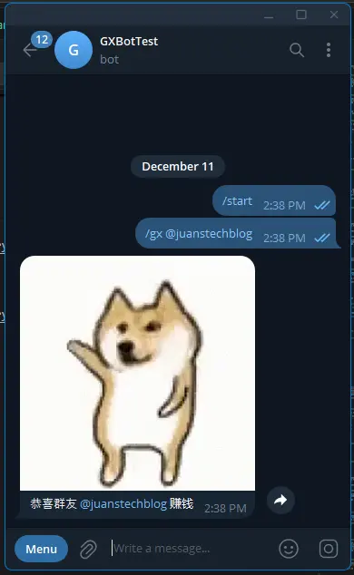

I want to create a bot that can congratulate other Telegram group members when they make a profit from crypto investments (Please do your own research before making any investments).
I keep the Telegram bot’s function simple. Group members can instruct the bot using command( /gx ) and mention( @ ) a user. The bot will then reply a prefixed congratulatory message and attach with a random GIF.
How to Create a Telegram Bot?
I don’t really know.
I once create a Telegram bot for a school coursework. I wrote the backend program in python and ran it on my laptop.
Now, the Telegram group members are from different countries and time zones, so the bot should be available for 24/7. I don’t want to keep my computer running all the time, so I’m considering different approach. “Serverless” came to my mind—it allows the Telegram bot code to run on the cloud 24/7 and on demand.
My plan is straightforward. I will use JavaScript to write the code, Cloudflare Workers (a serverless service) to run the code, and Cloudflare Workers KV(a cloud data storage) to store some GIF URLs.
Let’s begin.
Prerequisite
- A Telegram account.
- A Cloudflare account.
Create a Telegram Bot.
To create a Telegram bot, we need to talk to the BotFather.
- Go to BotFather , type
/newbot, or click Menu and select/newbot. - Enter your bot’s name(e.g., GX Bot).
- Enter your bot’s username(e.g., gx-box).
- BotFather will then provide you with an HTTP API token.
The HTTP API token is important and will be used to control the bot we just created.
Setup Telegram Bot Command and Group Privacy.
Next, we pre-define a command in our Telegram bot to make it easier for users.
- Type
/mybotand selectour bot(e.g., gx-bot). - Choose
Edit Botand thenEdit Commands. - Enter the command following the format provided by BotFather’s prompt. (e.g., gx - 加 @ 用户 Bot 就会帮你恭喜群友).
Also, disable the Telegram bot’s group privacy settings to allow all message flows to the bot backend without requiring group admin right.
- Type
/mybotand selectour bot(e.g., gx-bot). - Select
Bot SettingsandGroup Privacy. - Click
Turn off.
Create a Cloudflare Workers.
- Log in to Cloudflare.
- Go to Workers & Pages in the left side menu and click the Overview.
- Click the Create, then select Create Worker under the Workers tab.
- Enter a name(e.g., gx-bot-worker) for the worker and click Deploy.
- Once it’s done, click the Continue to Project button.
The worker is now ready to serve. It’s just waiting for us to provide the code to run. We will click the Edit Code button later to paste the code. Before that, we will need to set up Cloudflare Workers KV to store our GIF URLs.
Create and Set Up Cloudflare Workers KV.
We will use Cloudflare Workers KV to store the GIF URLs, which will be included in the Telegram bot response.
- Click the down arrow next to Workers & Pages on the left, and then click the KV.
- Click Create a Namespace, enter a Namespace Name(e.g., kv-gifs), and click Add.
- Afterward, the new Namespace will be added to the table blow. Click View in the row of the Namespace we just created.
- Go to the KV Pairs tab, and enter the key and value as shown in the table below.
| Key | Value |
|---|---|
gifs |
["https://media1.tenor.com/m/-ZQ-I0N9dRwAAAAC/dog-cute-dog.gif","https://media.tenor.com/WIMffkKhJC0AAAAi/pig-dog.gif"] |
You can always replace the values with your own GIF URLs.
Cloudflare KV stores data in key-value pairs. Our value will be the URLs in JSON array format, and we will use gifts as the key to retrieve it.
- Click Add entry to save.
Binding Cloudflare Workers KV and Variables/Secrets in Cloudflare Workers.
To use Cloudflare KV in the worker, we need to bind the services together first. Additionally, we will bind our HTTP API token and two secret variables.
- Click the down arrow next to Workers & Pages at the left and select Overview.
- Click the name of the worker(e.g., gx-bot-worker, from the previous example) we just created earlier.
- Go to the Settings tab.
Binding Cloudflare KV
- Under Bindings, click the + Add.
- Click KV namespace(e.g., kv-gifs, from the previous example).
- Enter a Variable name(e.g., GIFS), choose the KV namespace we just created, and click Deploy.
Add Variables and Secrets
We will create two variables according to the table below:
| Variable Name | Value |
|---|---|
| ENV_BOT_TOKEN | <HTTP API token from BotFather> |
| ENV_BOT_SECRET | <A Random combination of A-Z, a-z, 0-9, _ and -> |
ENV_BOT_TOKENwill store our HTTP API token. ForENV_BOT_SECRET, we need to create a value as a secret key to verify each Telegram updates.
- Under Variables and Secrets, click +Add.
- The Type can remain as text or be changed to secret to encrypt the text.
- Enter the Variable Name and Value according to the table above.
- Click Deploy.
Coding
I will fork the code from telegram-bot-cloudflare by cvzi and then make some modifications to fit our case.
First, we will declare some variables and constants.
let TOKEN; // Get it from @BotFather https://core.telegram.org/bots#6-botfather
let SECRET; // A-Z, a-z, 0-9, _ and -
let ENV_VAL; // Enviroment
const WEBHOOK = '/endpoint';
const BOT_COM = 'bot_command';
const GX_COM = '/gx';
const MENTION = 'mention';
const TXT_MENTION = 'text_mention';
We will create an entry point for the worker to receive and process requests from the Telegram bot API.
export default {
async fetch(request, env) {
ENV_VAL = env;
TOKEN = env.ENV_BOT_TOKEN;
SECRET = env.ENV_BOT_SECRET;
return await route(request);
},
};
The Workers runtime will inject the KV bindings, variables and secrets in the env. We assign them to our variables accordingly and pass the request to the route function.
The route function will direct the request to be processed with handleWebhook or set up our worker using the registerWebhook and unRegisterWebhook functions.
/**
* Wait for requests to the worker
*/
async function route (request) {
const url = new URL(request.url)
if (url.pathname === WEBHOOK) {
return await handleWebhook(request);
} else if (url.pathname === '/registerWebhook') {
return await registerWebhook(request, url, WEBHOOK, SECRET);
} else if (url.pathname === '/unRegisterWebhook') {
return await unRegisterWebhook(request);
} else {
return await new Response('No handler for this request');
}
}
The registerWebhook function will notify our endpoint URL and ENV_BOT_SECRET to the Telegram Bot API for receiving new updates. Obviously, the unRegisterWebhook function undoes this.
/**
* Set webhook to this worker's url
* https://core.telegram.org/bots/api#setwebhook
*/
async function registerWebhook (request, requestUrl, suffix, secret) {
// https://core.telegram.org/bots/api#setwebhook
const webhookUrl = `${requestUrl.protocol}//${requestUrl.hostname}${suffix}`
const r = await (await fetch(apiUrl('setWebhook', { url: webhookUrl, secret_token: secret }))).json()
return new Response('ok' in r && r.ok ? 'Ok' : JSON.stringify(r, null, 2))
}
/**
* Remove webhook
* https://core.telegram.org/bots/api#setwebhook
*/
async function unRegisterWebhook (request) {
const r = await (await fetch(apiUrl('setWebhook', { url: '' }))).json()
return new Response('ok' in r && r.ok ? 'Ok' : JSON.stringify(r, null, 2))
}
The handleWebhook function will check the incoming request’s secret token from Telegram Bot API against our ENV_BOT_SECRET. After that, it will convert request to JSON format and forward it to onUpdate function.
/**
* Handle requests to WEBHOOK
* https://core.telegram.org/bots/api#update
*/
async function handleWebhook (request) {
// Check secret
if (request.headers.get('X-Telegram-Bot-Api-Secret-Token') !== SECRET) {
return new Response('Unauthorized', { status: 403 })
}
// Read request body synchronously
const update = await request.json()
// Deal with response asynchronously
await onUpdate(update);
return new Response('Ok')
}
The onUpdate function checks whether the message object exists in the update. if it does, the function forwards the message to onMessage.
/**
* Handle incoming Update
* https://core.telegram.org/bots/api#update
*/
async function onUpdate (update) {
if ('message' in update) {
await onMessage(update.message)
}
}
The onMessage function will perform several checks:
- Check whether the
entitiesobject exists in the message. - Check whether one of the
entities’s types isBOT_COM. - Find the
mentionedUserin theentitiesthrough theentities’s type ofMENTIONorTXT_MENTION. - Check whether the command is valid.
If all the checks pass, extract the username, substitute it into a template string, and pass it to the
sendAnimationAndTextfunction.
/**
* Handle incoming Message
* https://core.telegram.org/bots/api#message
*/
function onMessage (message) {
if (!('entities' in message)) {
return;
}
let validComm = false;
let hasBotComm = message.entities.some(entity => entity.type === BOT_COM);
let mentionedUser = message.entities.find(entity => entity.type === MENTION || entity.type === TXT_MENTION);
if (hasBotComm) {
validComm = message.text.startsWith(GX_COM)
}
if (hasBotComm && validComm && mentionedUser) {
let text = message.text;
let mentionedUsername = text.slice(mentionedUser.offset, mentionedUser.offset + mentionedUser.length);
let response = `恭喜群友 ${mentionedUsername} 赚钱`;
return sendAnimationAndText(message.chat.id, response);
}
return;
}
The sendAnimationAndText function will retrieve the list of gifs from KV and randomly pick a URL from it. Afterwards, it will pass all the parameters to apiUrl to form a query string and send it as a response to the Telegram Bot API.
/**
* Send plain text message
* https://core.telegram.org/bots/api#sendmessage
*/
async function sendAnimationAndText (chatId, text) {
let gifs = JSON.parse(await ENV_VAL.GIFS.get("gifs"));
let randomGif = gifs[Math.floor(Math.random() * gifs.length)];
return (await fetch(apiUrl('sendAnimation', {
chat_id: chatId,
animation: randomGif,
caption: text
}))).json()
}
The apiUrl is a utility function that converts the passed-in parameters to query strings.
/**
* Return url to telegram api, optionally with parameters added
*/
function apiUrl (methodName, params = null) {
let query = ''
if (params) {
query = '?' + new URLSearchParams(params).toString()
}
return `https://api.telegram.org/bot${TOKEN}/${methodName}${query}`
}
Full code
/**
* Original source code: https://github.com/cvzi/telegram-bot-cloudflare
* with some modification by YJCHOO
*/
let TOKEN; // Get it from @BotFather https://core.telegram.org/bots#6-botfather
let SECRET; // A-Z, a-z, 0-9, _ and -
let ENV_VAL;
const WEBHOOK = '/endpoint';
const BOT_COM = 'bot_command';
const GX_COM = '/gx';
const MENTION = 'mention';
const TXT_MENTION = 'text_mention';
export default {
async fetch(request, env) {
ENV_VAL = env;
TOKEN = env.ENV_BOT_TOKEN;
SECRET = env.ENV_BOT_SECRET;
return await route(request);
},
};
/**
* Wait for requests to the worker
*/
async function route (request) {
const url = new URL(request.url);
if (url.pathname === WEBHOOK) {
return await handleWebhook(request);
} else if (url.pathname === '/registerWebhook') {
return await registerWebhook(request, url, WEBHOOK, SECRET);
} else if (url.pathname === '/unRegisterWebhook') {
return await unRegisterWebhook(request);
} else {
return await new Response('No handler for this request');
}
}
/**
* Handle requests to WEBHOOK
* https://core.telegram.org/bots/api#update
*/
async function handleWebhook (request) {
// Check secret
if (request.headers.get('X-Telegram-Bot-Api-Secret-Token') !== SECRET) {
return new Response('Unauthorized', { status: 403 });
}
// Read request body synchronously
const update = await request.json();
// Deal with response asynchronously
await onUpdate(update);
return new Response('Ok');
}
/**
* Handle incoming Update
* https://core.telegram.org/bots/api#update
*/
async function onUpdate (update) {
if ('message' in update) {
await onMessage(update.message);
}
}
/**
* Handle incoming Message
* https://core.telegram.org/bots/api#message
*/
function onMessage (message) {
if (!('entities' in message)) {
return;
}
let validComm = false;
let hasBotComm = message.entities.some(entity => entity.type === BOT_COM);
let mentionedUser = message.entities.find(entity => entity.type === MENTION || entity.type === TXT_MENTION);
if (hasBotComm) {
validComm = message.text.startsWith(GX_COM);
}
if (hasBotComm && validComm && mentionedUser) {
let text = message.text;
let mentionedUsername = text.slice(mentionedUser.offset, mentionedUser.offset + mentionedUser.length);
let response = `恭喜群友 ${mentionedUsername} 赚钱`;
return sendAnimationAndText(message.chat.id, response);
}
return;
}
/**
* Send plain text message
* https://core.telegram.org/bots/api#sendmessage
*/
async function sendAnimationAndText (chatId, text) {
let gifs = JSON.parse(await ENV_VAL.GIFS.get("gifs"));
let randomGif = gifs[Math.floor(Math.random() * gifs.length)];
return (await fetch(apiUrl('sendAnimation', {
chat_id: chatId,
animation: randomGif,
caption: text
}))).json()
}
/**
* Set webhook to this worker's url
* https://core.telegram.org/bots/api#setwebhook
*/
async function registerWebhook (request, requestUrl, suffix, secret) {
// https://core.telegram.org/bots/api#setwebhook
const webhookUrl = `${requestUrl.protocol}//${requestUrl.hostname}${suffix}`;
const r = await (await fetch(apiUrl('setWebhook', { url: webhookUrl, secret_token: secret }))).json();
return new Response('ok' in r && r.ok ? 'Ok' : JSON.stringify(r, null, 2));
}
/**
* Remove webhook
* https://core.telegram.org/bots/api#setwebhook
*/
async function unRegisterWebhook (request) {
const r = await (await fetch(apiUrl('setWebhook', { url: '' }))).json();
return new Response('ok' in r && r.ok ? 'Ok' : JSON.stringify(r, null, 2));
}
/**
* Return url to telegram api, optionally with parameters added
*/
function apiUrl (methodName, params = null) {
let query = '';
if (params) {
query = '?' + new URLSearchParams(params).toString();
}
return `https://api.telegram.org/bot${TOKEN}/${methodName}${query}`;
}
Testing
Now, it’s time to test the bot.
Search our bot, click start and type command.

Add the bot to our group chat and test it.